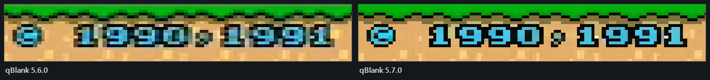

src/render/shaders.h, pass 3 (kScalePS)
The pipeline is split so that scaling never sees a card format. Pass 1 cleans the signal, pass 2 deinterlaces and applies geometry, and only then does pass 3 resample onto the window. Every scaling filter therefore works on real pixels rather than on half-decoded chroma, and is independent of what the card happened to deliver.
The five filters
ScaleFilter in src/config.h: Nearest, Bilinear, Bicubic, Lanczos3, SharpBilinear.
| Filter | Taps | Notes |
|---|---|---|
| Nearest | 1 | Point fetch. Exact pixels, hard edges, uneven pixel sizes at non-integer factors |
| Bilinear | 2×2 | The hardware sampler |
| Bicubic | 4×4 | Catmull-Rom, so it interpolates through its samples rather than approximating them |
| Lanczos3 | 6×6 | Sharpest of the resampling filters; slight ringing at hard edges |
| Sharp bilinear | 2×2 | Nearest up to the integer factor, bilinear only across the remainder |
Catmull-Rom rather than Mitchell or B-spline: it passes through its control points, so a pixel that lands exactly on a source pixel comes back unchanged. For a signal made of hard pixel edges that is what you want.
Sharp bilinear is the right answer for pixel art at non-integer window sizes. It gives you the crispness of nearest neighbour with the uneven-pixel artefact confined to a single blend across each boundary, instead of some pixels being drawn twice as wide as others.
Both Catmull-Rom and Lanczos3 are written as real loops with weights computed per tap, not as unrolled tap lists — for the same shader-compile reason as the composite filter's chroma loop.
The native pixel grid
SampleNativeGrid() in the scale pass. Off by default; set the source's real
horizontal pixel count and it resolves every output pixel to the console's own
pixel instead of to a fraction of one.
The problem it solves
A capture card samples the active line at a fixed rate — 720 samples for BT.601, whatever the source is doing. A SNES draws 256 pixels across most of that line, so each console pixel lands on about 2.5 samples. Not a whole number, and already low-pass filtered by the card.
Scale that straight to a window and the pixel boundaries fall wherever the arithmetic puts them: some console pixels come out three output blocks wide, some four, and the edges between them are soft in a way that changes across the picture. That is why upscaled pixel art usually looks slightly wrong even when it is sharp.
Where the grid is
Measured since 5.7.0. Source width says how many pixels there are, not where. A console draws its 256 or 320 across about 47.5 µs of the line, the card samples about 53, and the dot clock is the console's own. A PAL SNES lands on 864/341 = 2.534 samples per pixel, from sample 24; "256 across 720" would put 2.81 from 0 and be a whole pixel off every nine.
Every pixel boundary is a possible edge, so the summed horizontal steps of the
picture repeat with the pitch. AnalyzePixelGrid() takes the strongest repeat
in the range the setting allows; its phase gives the boundaries. A quarter of
the lines every fifth frame, after Present. Nothing snaps until a grid is found,
and the log says so:
Pixel grid: 2.5336 samples per pixel, from 1.49, 257.3 pixels in 24..675 (strength 5.8)A source without a grid -- a GameCube or Wii at 640 -- never reaches the threshold and is left alone.
Found without a width
With Source width on not specified, an analogue source of up to 576 lines is searched the same way, over the pitches a 256 or 320 console can have (2.04 to 2.81 samples at 720). Left out: the colour carrier and its alias, which repeat too. The same grid at strength 5 or more, three looks running (about 1.5 s), brings up a notice:
Looks like pixel art, about 256 pixels wide. Set the source width?
Set puts the width in; Show opens the settings at Source width and changes nothing; Ignore keeps it quiet until the next start. After the notice the search stops. Never on HDMI, where the console scales its own pixels.
256 or 320 is decided by the dot clock: a 256 console fits about 285 of its pixels into a whole line, a Neo Geo 320. A Mega Drive in H40, a PS1 or Saturn at 320 lands on 2.01 samples, too close to Nyquist to tell from dithering, and is not found; nor are 384, 512 or 640.
| Clips (raw, replayed) | Strongest grid |
|---|---|
| PAL SNES | 5.6 – 5.8 at 2.534 |
| GameCube / Wii PAL 50, 14 clips | under 2.5 |
| GameCube PAL 60, menus included, 29 clips | 3.3 at 2.680 |
How blurred
The rebuild needs to know how far the card spreads a pixel. Up to 5.7.0 that was a fixed 0.7 samples at 720. Now it is measured, once a grid is in use: six lines every fifth frame are fitted with twelve blurs from 0.3 to 1.4 samples, each a banded least squares with the console pixels as unknowns, and the one with the smallest remainder wins, a parabola through its neighbours placing it between them. A hundred looks, about ten seconds, then it is kept for the source format.
Pixel grid: card blur 0.68 samples (0.68 at 720), rms 5.50 there, 6.72 at 0.3, 6.45 at 1.4Under a millisecond a look, after Present; frame age unchanged at 10.7 ms.
What it does
Each output pixel belongs to one console pixel, and gets that pixel's value. On a digital source that is the average of exactly the samples it covers, with partial weights at both ends; at 2.5 samples per pixel the boundaries land inside a sample most of the time.
On an analogue source the average is not the console's pixel. The card's filter
and the dot demodulator spread every pixel over about one on either side, so a
black outline comes out grey and the colours next to it muddy. With the grid
known that is a least squares problem: every pixel one flat value, the blur
measured (above). Its answer is a fixed weighting of the
samples by their distance from the pixel's centre, worked out once per grid (GridKernel(), 8 knots, logged as
rebuild weights), clamped to what the pixel's own samples span.
Even blocks
Which console pixel a screen pixel shows was, until 7.2.2, the one under its centre. At a scale that is not whole that gives blocks of two widths: at 4.6 screen pixels per console pixel, some came out four wide and some five. Integer scaling did not help, as it makes only the lines whole.
Now a screen pixel that straddles a boundary is shared by area between the two console pixels. Every block covers the same width, 4.6 in that example, and the one pixel at its edge is the mix. Rows the same way. At a whole scale nothing straddles and the blocks stay hard. At most three more reads, only on boundary pixels.
Cleanup per console pixel
The card still hands one colour over as many: it desaturates by position, and
overshoots for about two pixels behind a big step. On analogue SDR sources
kGridPS therefore runs over one texel per console pixel and line, before the
scale pass:
- rebuild, as above
- PAL only: undo the card's colour averaging with the line above
- colour by region: pixels that belong to one area take its colour
- brightness by mode, beside a step of 60 or more and two pixels behind it
- pixels half covering a vertical edge take the colour above or below
In the order 1, 2, 4, 3, 4, 5. Latency unchanged.
Fine texture stays. Up to 5.7.0 mode ran beside any step of 30 and pulled the darker grain of a wood frame (contrast about 50) onto the pale majority, and region mixed pale neighbours into the grain's colour. Since 5.8.0 mode waits for a step the card really errs on, and region's inner average takes only pixels within 20 of the pixel's brightness. On the SMW title frame the grain's spread went from 15.2 to 20.5 (22.1 with the cleanup off); logo and sprites are unchanged. Not on quarter turns. Screenshots and recordings are not snapped. Sharpening stands down while snapping; the rebuild already does that job.

What it is not
This is not what an OSSC does, and it cannot be. An OSSC samples the analogue waveform at the console's own dot clock, so it recovers the pixels before they are ever mixed together. Here they have already been resampled once and filtered by the card. What this recovers is the grid, not the detail that grid used to carry.
Worth having, and worth not overselling.
Horizontal only
Deliberately. Vertically the card already delivers one sample per real line — 240 or 288 of them — so there is nothing to undo. The zoomed result shows it clearly: hard blocks across, untouched detail down.
It also replaces the filter setting rather than combining with it. Resolving to the console's pixel is a nearest-neighbour decision; running a smoothing filter afterwards would restore exactly the boundary softness it just removed.
And only from a standard raster
Since 3.7 the control is hidden, and a stored value neutralised, above 576 source lines — 576 being PAL's count and 480 NTSC's, so anything taller has been scaled by something on the way: a dongle, an outboard scaler, the card itself.
The arithmetic above is the reason. It assumes samples taken along one analogue line at a fixed rate, and works out where the console's pixel boundaries fell among them. Once a scaler has been over the picture, the samples are no longer those samples; the boundaries are not where this looks for them, and the coverage weighting averages across edges instead of resolving them. It takes detail away rather than giving it back. Issue 1 is where that showed up: a 480i console through a dongle, arriving at 1080 lines, with a horizontal grid quietly making the picture worse.
The declared source line count does not rescue it, deliberately. That number is about vertical. Knowing how many lines a console drew does not turn the 720 samples along each one back into the ones the card originally took.
Pairs with integer scaling: with whole lines no row needs a mixed pixel, so the blocks are hard top and bottom as well.
The same number also feeds the square pixels aspect mode. Here it decides where the edges sit; there it decides what shape the picture is. Unticking Snap edges to the grid keeps the shape and drops the snapping; see below.
Integer scaling
AspectMode::Integer in src/config.h. The lines are multiplied by the
largest whole number that still fits the window; the width follows from
the target aspect, not from a second factor of its own.
The result is centred.
Why only the lines
Until 3.6.3 both axes took the same integer factor off the pixel counts, and that quietly threw the shape away. An analogue line is not a row of pixels — it is a voltage the card sampled 720 times, and the count says nothing about how wide the picture is. Measured on a PAL60 GameCube cropped to 668×448:
| Picture in a 1895×1115 window | Aspect | |
|---|---|---|
| Source | 1478×1115 | 1,326 |
| Integer, until 3.6.2 | 1336×896 | 1,491 |
| Integer, from 3.6.3 | 1188×896 | 1,326 |
Twelve per cent too wide, and visible the moment you switched between the two modes. Now the two agree to within a rounded pixel.
Along a line there is nothing to keep whole, so nothing is lost by letting the width fall where the aspect puts it. The lines are the one axis where the source really does have a discrete count, and every one of them comes out the same height.
Line doubling needs no special case: outputHeight_ already counts the doubled
rows, and multiplying those by a whole number keeps them equal. A quarter turn
does need one — it puts the lines on the other axis.
If not even one output pixel per line fits, the mode falls through to the ordinary aspect fit; a picture too small to be exact is better than no picture.
What it cannot do
Fill the window. 448 lines in 1115 pixels wants a factor of 2,49; the next whole one clips a sixth of the height. Source with the sharp-bilinear filter is the edge-to-edge answer — same shape, no border, and the filter squeezes each line boundary into a single output pixel so the blocks still look even.
It has a shape now, so files get it too
Apply to recording, screenshots and camera resamples the picture to square pixels on its way out, because a file is a grid and a grid has no room for "these pixels are not square". Integer used to be exempt from that pass alongside Stretch, on the grounds that it was a promise about pixels. It is not: the whole-number factor is worked out from the window size, and a file has no window. What it does have is a shape, the same one every other mode has, so the exemption is gone and a recording comes out 668×504 rather than 668×448.
Square pixels
AspectMode::SquarePixels, new in 3.6.3. Every console pixel as wide as it is
tall — the shape comes out of the grid the console drew, not out of the
broadcast standard.
The standard knows exactly one shape, 4:3, and for most sources that is the right answer. A SNES is the case where it is not: it draws 256×224, and 4:3 means each of those pixels is 8:7, wider than tall. Emulators offer both, and plenty of people prefer the square one.
Where the width comes from
The lines qBlank knows. The columns it cannot: what arrived was a voltage, and how often the console switched it is nowhere in the signal. So the number comes from Source width under the native pixel grid — the same setting, read a second way.
The console does not draw across the whole line the card samples. Its 256 or 320 pixels take about 47.7 of the 53.3 µs, whatever the dot clock: a SNES puts 256 of its 341 dots per line on 858 samples (525 lines) or 864 (625 lines), so 644 or 649 of the 720 — the measured 2.534 per pixel. On an analogue source of up to 576 lines the count is spread over that share of the source width, then scaled with the crop.
Until 7.2.2 it was spread over all 720, and every pixel came out a tenth too narrow: a SNES at 256×224 showed at about 1,03 instead of 256 ÷ 224 = 1,14.
Not specified
The first entry in Source width used to read "off". It does not switch anything off any more: with no number given, square pixels falls back to the card's own samples — 668 across, 448 down, 1,49. That is not a fallback so much as the question the mode asks, taken literally, and it is what integer scaling did on every source until 3.6.2.
On an analogue source those samples are never square: 720 across 576 lines is narrower than 4:3, 720 across 480 wider. The settings window says so in amber under the aspect ratio and points to Source for 4:3, or to Source width.
Shape without snapping
Snap edges to the grid, under Source width, is on by default. Off, the
number only sets the shape for square pixels; the picture goes through the
scaling filter as if no width were given. It is for those who want the shape
but not the grid mapping. nativeSnap in ImageSettings; the renderer then
hands the shader a span of 0.
AmaRecTV calls this state "not appoint". qBlank calls it not specified, which is the same thought in English that reads.
Half-height sources
coSitedFields_ means the card packed a half-height source into a full-height
interlaced frame, every line stored twice. The source then has half the lines
the frame does, and the aspect uses that halved count — otherwise a 240p console
would come out twice as wide as it should. Line doubling needs no such
correction: it lives in outputHeight_, and the aspect is built from
croppedHeight_.
The remaining aspect modes are Source (use what the card reports),
Force16x9, Force4x3 and Stretch (fill the window, ignore aspect).
Contrast adaptive sharpening
float3 sharp = c + (c * 4.0 - n - s - w - e) * (amount * 0.25);
return clamp(sharp, lo, hi);A cross-shaped unsharp mask, sampled one source texel away.
The clamp is what makes it adaptive: lo and hi are the minimum and maximum of
the centre pixel and its four neighbours, so the result can never leave the range
the neighbourhood already spans. Flat areas stay clean and edges cannot ring,
which is what separates this from a plain unsharp mask that halos everything.
A consequence worth knowing: a perfect step edge is left alone at any setting. The centre is already the local extreme and the clamp will not push it past its own neighbours. There is nothing to sharpen about an edge that is already hard — the filter works on the bandwidth-limited ramps a composite signal actually delivers.
It samples through a linear sampler rather than by texel fetch, because at this point in the pipeline the coordinates are fractional anyway.
The offset used to come from the wrong size
This line read 1.0 / gDstSize until it was measured. uv runs over the
source texture, so an offset of one destination pixel steps
srcSize / dstSize source texels — less than one whenever the picture is
enlarged.
Both halves then collapse together. The neighbours are sampled between texels, so the unsharp sum shrinks; and the clamp is built from those same samples, so its headroom shrinks with it. The filter faded out in proportion to how large you made the window.
Measured against a bandwidth-limited edge on a 720×576 source, mean change per pixel across the edge zone at full strength:
| Window | Factor | 1/gDstSize | 1/gSrcSize |
|---|---|---|---|
| 720×576 | 1× | 0.71 levels | 0.71 levels |
| 1440×1152 | 2× | 0.38 | 1.52 |
| 1920×1536 | 2.7× | 0.25 | 1.55 |
| 2880×2304 | 4× | 0.12 | 1.77 |
| 3840×3072 | 5.3× | 0.06 | 1.90 |
| 480×384 | 0.67× | 1.43 | 0.92 |
At 1:1 the two agree, which is why the filter was not obviously broken. Beyond that it faded to nothing — and at 4K, 0.06 levels out of 255 is invisible. That is exactly the regime a 240p or 576i picture is normally watched in.
The last row is the other half of the same error: shrinking the picture stepped more than one texel, reaching across detail and over-sharpening.
Counted in source texels the response holds between 0.7 and 1.9 levels across the whole range, which is what a scale-independent sharpener should do.
Sharpening is deliberately not applied to what the recorder, the screenshots or the virtual camera receive. It is a property of viewing at a particular size, not a property of the picture.
Scanlines and the mask
Off by default, and meant to stay that way for anyone who wants the signal as clean as it arrived. They are here because 240p artwork was drawn for a display that had gaps between its lines and a coloured mask over its phosphors, and on a modern panel the absence of both is itself a distortion.
Like sharpening, both are display-only — a recording takes the intermediate, which is upstream of this pass. Baking scanlines into a file at source resolution would put the gaps in the wrong places for whoever plays it back.

Scanlines follow the source, not the screen
float lines = gSrcSize.y / gLinePitch;
float scale = gDstSize.y / max(lines, 1.0);
float room = saturate((scale - 2.0) * 1.0);
if (room <= 0.0) return 1.0;
float phase = frac(uv.y * lines);
float beam = 0.5 + 0.5 * cos(3.14159265 * (abs(phase - 0.5) * 2.0));
float dark = 1.0 - gScanlines * room * (1.0 - beam);
return dark / (1.0 - gScanlines * room * 0.5);Four decisions:
The grid is the source's. The gaps belong to the signal, not to the monitor showing it.
And the source's grid is not always the source's height. gLinePitch is
output rows per real picture line, and it is a free float rather than a flag.
Line doubling puts 2 in it, co-sited fields put 2 in it, and a declared source
line count puts whatever the division comes to — 1080 arriving from a console
that drew 480 is 2.25, a number no measurement would ever have proposed. Without
it a scaled capture gets its gaps at 1080-line density, which is not a grid the
console ever had.
Below twice that, it switches off. There is nowhere to put a gap: the line and the gap land inside the same output pixel and the result is moiré, not scanlines. It fades in across 2× to 3× rather than appearing abruptly. This gate, and not the source's absolute height, is the whole of the limit — see what the control says when it hits it.
The brightness is put back. Scanlines darken by construction, so without compensation the control is mostly a brightness slider. Dividing by the profile's mean keeps it structural. The formula above, at the 0.5 cap, sampled at the rows the screen actually shows:
| Source → output | Rows per line | Gate | Mean | Range |
|---|---|---|---|---|
| 240p → 1440p | 6.00 | on | 1.000 | 0.71–1.29 |
| 288p → 1440p | 5.00 | on | 1.000 | 0.73–1.33 |
| 480p → 1440p | 3.00 | on | 1.000 | 0.83–1.33 |
| 576p → 1440p | 2.50 | half | 1.000 | 0.86–1.12 |
| 720p → 1440p | 2.00 | off | 1.000 | — |
| 1080p → 1440p | 1.33 | off | 1.000 | — |
| 720p → 2160p | 3.00 | on | 1.000 | 0.83–1.33 |
| 1080 delivered, 480 declared → 1440p | 3.00 | on | 1.000 | 0.83–1.33 |
| 1080 delivered, 480 declared → 2160p | 4.50 | on | 1.000 | 0.67–1.31 |
The ranges are narrower than the analytic 0.667–1.333 because no output row lands exactly in the middle of a gap; where one nearly does, at 4.5 rows per line, it gets close. The mean is 1.000 in every case, which is the point of the division.
The last three rows are the ones that matter for what changed in 3.7. 720p on a 4K screen has three rows per line — the effect works there, and hiding the control below 576 lines had been hiding a control that would have done its job. And a 1080-line delivery declared as 480 lands on exactly the same three rows as a real 480p source would, which is the whole purpose of declaring it.
Say what the console draws
ImageSettings::sourceLines, Source lines in the settings, above the two
sliders. 0 is automatic and means what it always meant: count the lines that
arrive.
It exists because the count cannot always be measured. A card that starts at 720p and a dongle with a scaler of its own both hand over 1080 lines from a console that drew 480, and nothing in the picture says reliably which of the two numbers is real — but the person who plugged the console in knows.
| 240 | NTSC 240p — SNES, Mega Drive, PS1, N64 |
| 288 | PAL 288p — the same in 50 Hz |
| 480 | NTSC 480i/p — GameCube, PS2, Dreamcast, Wii |
| 576 | PAL 576i — the same in 50 Hz |
| 720, 1080 | for completeness |
PAL has more lines than NTSC — 576 against 480, half height 288 against 240 — so the same console gives a different number by region. PAL 60 is the exception: a PAL console in 60 Hz mode draws the NTSC raster, 240 or 480, and keeps PAL colour. The lines follow the rate, not the colour.
It is a statement about vertical only. Horizontally the equivalent is the native pixel grid, and the two do not stand in for each other: knowing how many lines a console draws says nothing about what a scaler did to the samples along each one. That is why the native grid still disappears above 576 lines while the scanlines no longer do.
When there is no room, it says so
The renderer keeps the figure it just used — VideoRenderer::scanlineRoom(),
output rows per picture line, computed from the window, the crop and the declared
line count together, because nothing else has all three. Under two, the slider
prints it:
No room: the window shows 1.3 rows per picture line, 2 are needed. Make the window bigger — or is the line count above right?
Rotated by 90°, gLinePitch is set to 0 and the scanlines are off by
construction — they would run sideways — and the control says that instead.
Before 3.7 the entire section was hidden above 576 source lines, which meant a 720p card made the feature invisible rather than inapplicable, and issue 1 asked twice whether it existed. A control that explains its own silence is better than one that is missing.
The mask
Mask() tints output pixels in triads — aperture grille (vertical stripes, the
way a Trinitron worked) or shadow mask (the triads step sideways every other
line). Same brightness compensation.

It needs real output resolution to read as a mask rather than as a colour cast: at 1080p over a 240p source each source line is four output pixels tall and a triad is three across, which is about the floor.
What it does not need is any knowledge of the source. Mask() takes
i.pos.xy, the position in output pixels, and nothing else; a triad is three
screen pixels wide whatever is being shown. It was hidden above 576 source lines
until 3.7 for no reason that survives reading the function.
Both are capped at 0.5
Not a taste judgement — beyond half strength the compensation cannot hold the colour. Scanlines and the mask both darken by construction and both divide the result by the profile's mean to put the brightness back; the further the trough goes, the more the division has to lift the peak, and past 0.5 that lift starts clipping channels apart from one another. What arrives is not a stronger effect but a colour cast.
The setting is clamped on load as well as in the control, so an edited configuration file cannot reach past it either.
The lift is limited by the brightest channel
Even below 0.5 the compensation must not be allowed to clip, so the gain is capped by whatever headroom the pixel actually has:
float peak = max(max(rgb.r, rgb.g), rgb.b);
if (peak > 1e-4) {
float headroom = 1.0 / peak;
gain = min(gain, max(headroom, 1.0));
}
rgb *= gain;Clipping one channel and not the others is what turns a bright area a different
colour. Capping the gain by the peak channel means the pixel gets darker than
the ideal compensation would like, which is a change in brightness — and a
brightness error is far less visible than a hue error. max(headroom, 1.0)
keeps the cap from ever pulling a pixel below where it started.
Where the picture lands
VideoRenderer::videoRect() reports the rectangle the picture occupies in client
pixels, which is what the crop overlay, the mouse hit-testing and the toolbar all
work from.
SetTopInset() reserves pixels at the top of the window for the toolbar. The
picture is fitted below them rather than drawn underneath, so the bar never
covers what you are playing.